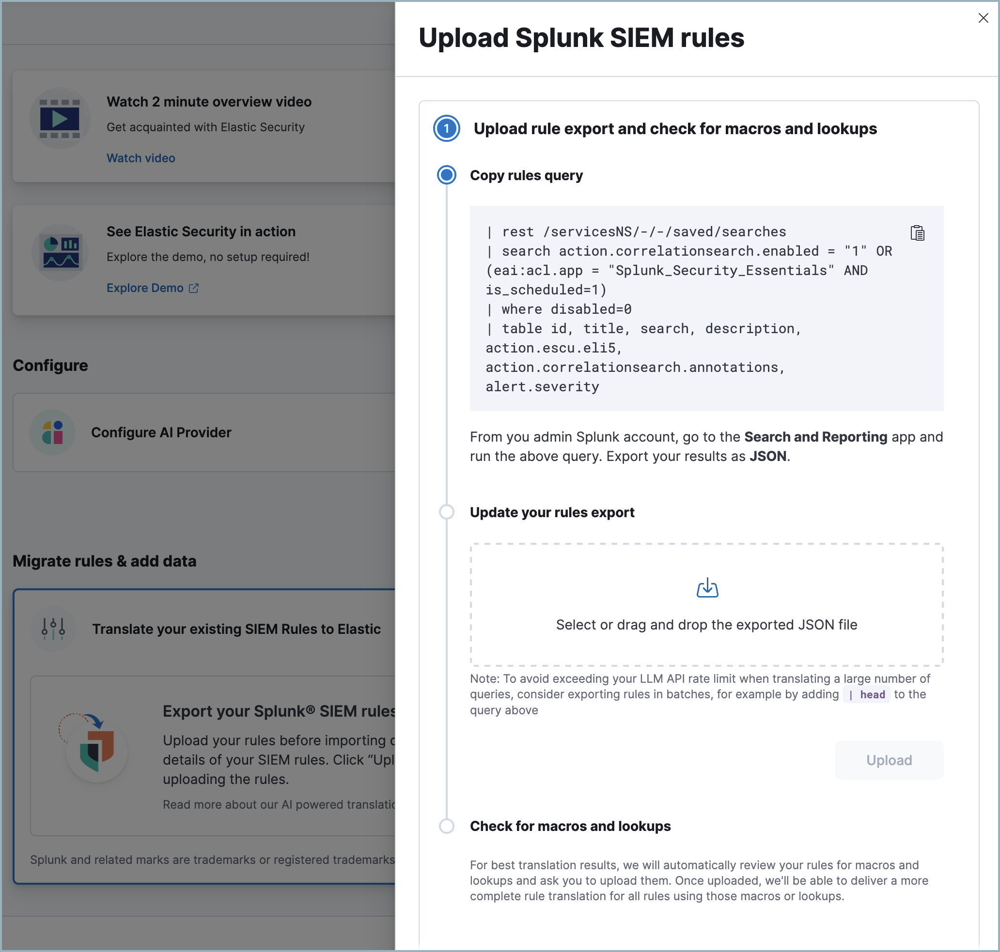

Automatic migration
editAutomatic migration
editThis feature is in technical preview. It may change in the future, and you should exercise caution when using it in production environments. Elastic will work to fix any issues, but features in technical preview are not subject to the support SLA of GA features.
Automatic Migration for detection rules helps you quickly convert SIEM rules from the Splunk Processing Language (SPL) to the Elasticsearch Query Language (ES|QL). If comparable Elastic-authored rules exist, it simplifies onboarding by mapping your rules to them. Otherwise, it creates custom rules on the fly so you can verify and edit them instead of writing them from scratch.
You can ingest your data before migrating your rules, or migrate your rules first in which case the tool will recommend which data sources you need to power your migrated rules.
Get started with Automatic Migration
edit- Find Get started in the navigation menu or use the global search field.
- Under Configure AI provider, select a configured model or add a new one. For information on how different models perform, refer to the Large language model performance matrix.
- Next, under Migrate rules & add data, click Translate your existing SIEM rules to Elastic, then Upload rules.
-
Follow the instructions on the Upload Splunk SIEM rules flyout to export your rules from Splunk as JSON.
 -
Select your JSON file and click Upload.
If the file is large, you may need to separate it into multiple parts and upload them individually to avoid exceeding your LLM’s context window.
-
After you upload your Splunk rules, Automatic Migration will detect whether they use any Splunk macros or lookups. If so, follow the instructions which appear to export and upload them. Alternatively, you can complete this step later — however, until you upload them, some of your migrated rules will have a
partially translatedstatus. If you upload them now, you don’t have to wait on the page for them to be processed — a notification will appear when processing is complete. - Click Translate to start the rule translation process. You don’t need to stay on this page. A notification will appear when the process is complete.
- When migration is complete, click the notification or return to the Get started page then click View translated rules to open the Translated rules page.
The Translated rules page
editThis section describes the Translated rules page’s interface and explains how the data that appears here is derived.
When you upload a new batch of rules, they are assigned a name and number, for example SIEM rule migration 1, or SIEM rule migration 2. Use the Migrations dropdown menu in the upper right to select which batch appears.
The table’s fields are as follows:
- Name: The names of Elastic-authored rules cannot be edited until after rule installation. To edit the name of a custom translated rule, click the name and select Edit.
-
Status: The rule’s translation status:
-
Installed: Already added to Elastic SIEM. Click View to manage and enable it. -
Translated: Ready to install. This rule was mapped to an Elastic-authored rule, or translated by Automatic Import. Click Install to install it. -
Partially translated: Part of the query could not be translated. You may need to specify an index pattern for the rule query, upload missing macros or lookups, or fix broken rule syntax. -
Not translated: None of the original query could be translated. -
Error: Rule translation failed. Refer to the the error details.
-
-
Risk Score: For Elastic-authored rules, risk scores are predefined. For custom translated rules, risk scores are defined as follows:
-
If the source rule has a field comparable to Elastic’s
risk score, we use that value. -
Otherwise, if the source rule has a field comparable to Elastic’s
rule severityfield, we base the risk score on that value according to these guidelines. - If neither of the above apply, we assign a default value.
-
If the source rule has a field comparable to Elastic’s
- Rule severity: For Elastic-authored rules, severity scores are predefined. For custom translated rules, risk scores are based on the source rule’s severity field. Splunk severity scores are translated to Elastic rule severity scores as follows:
| Splunk severity | Elastic rule severity |
|---|---|
1 (Info) |
Low |
2 (Low) |
Low |
3 (Medium) |
Medium |
4 (High) |
High |
5 (Critical) |
Critical |
-
Author: Shows one of two possible values:
Elastic, orCustom. Elastic-authored rules are created by Elastic and update automatically. Custom rules are translated by the Automatic Migration tool or your team, and do not update automatically. - Integrations: Shows the number of Elastic integrations that must be installed to provide data for the rule to run successfully.
- Actions: Allows you to click Install to add a rule to Elastic. Installed rules must also be enabled before they will run. To install rules in bulk, select the check box at the top of the table before clicking Install.
Finalize translated rules
editOnce you’re on the Translated rules page, to install any rules that were partially translated or not translated, you will need to edit them. Optionally, you can also edit custom rules that were successfully translated to finetune them.
You cannot edit Elastic-authored rules using this interface, but after they are installed you can edit them from the Rules page.
Edit a custom rule
editClick the rule’s name to open the rule’s details flyout to the Translation tab, which shows the source rule alongside the translated — or partially translated — Elastic version. You can update any part of the rule. When finished, click Save.
If you haven’t yet ingested your data, you will likely encounter Unknown index or Unknown column errors while editing. You can ignore these and add your data later.
View rule details
editThe rule details flyout (which appears when you click on a rule’s name in the Translate rules table) has two other tabs, Overview and Summary. The Overview tab displays information such as the rule’s severity, risk score, rule type, and how frequently it runs. The Summary tab explains the logic behind how the rule was translated, such as why specific ES|QL commands were used, or why a source rule was mapped to a particular Elastic-authored rule.
All the details about your migrations is stored in the .kibana-siem-rule-migrations-rules-default index. You can use Discover to review a variety of metrics, analyze metrics, and more.
Frequently asked questions (FAQ)
editHow does Automatic Migration handle rules that can’t be exactly translated for various reasons, such as feature parity issues?
After translation, rules that can’t be translated appear with a status of either partially translated (yellow) or not translated (red). From there, you can address them individually.
Are nested macros supported?
Yes, Automatic Migration can handle nested macros.
How can we ensure rules stay up to date?
Automatic Migration maps your rules to Elastic-authored rules whenever possible, which are updated automatically. Like all custom rules, rules created by Automatic Migration must be maintained by you.
What index does information about each migration appear in?
No matter how many times you use Automatic Migration, migration data will continue to appear in .kibana-siem-rule-migrations-rules-default.
How does Automatic Migration handle Splunk rules which lookup other indices?
Rules that fall into this category will typically appear with a status of partially translated. You can use the LOOKUP JOIN ES|QL command to help in this situation.